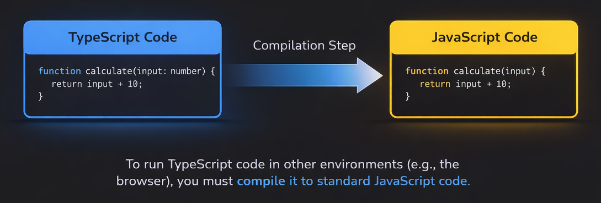

Overview
- One of the big disadvantages of TypeScript is that it requires a compilation step to convert TypeScript code into JavaScript.
- The .ts files do not run in the browser directly; they need to be compiled to JavaScript first.
- If you are running a TypeScript project for the backend for Node.js, you will need to use a tool like ts-node to run TypeScript code directly.
- You will need to install a TypeScript compiler to convert TypeScript code into JavaScript.
- The TypeScript compiler is called tsc and it can be installed globally using npm.
- To install TypeScript globally, you can run the following command in your terminal:

npm install -g typescriptnpm install --save-dev typescripttsc --versiontsc yourfile.tsKeywords
- HTML
Code Keywords
The <!DOCTYPE html> declaration defines the document type and
version of
HTML.
<!DOCTYPE html>Code Examples
Basic HTML Document Structure
This is a basic structure of an HTML document:
<!DOCTYPE html>
<html lang="en">
<head>
<meta charset="UTF-8">
<title>My First Page</title>
</head>
<body>
<h1>Hello World</h1>
</body>
</html>Questions
Resources
TODO
- Clean up the code using ChatGPT suggestions